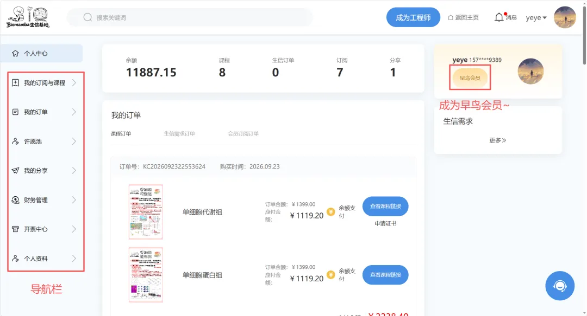

【官网】个人中心（零门槛成为早鸟会员，邀新佣金翻倍）
原文：https://mp.weixin.qq.com/s?__biz=MzAwMzIzOTk5OQ==&mid=2247542607&idx=2&sn=9801eb63dc5bcc17aa63b3949f0ea14f&chksm=9b3c5e1fac4bd70982434d122769f0fd0572fec1ab729be458008fb3cda8dbcdc03bd84aac74#rd 合集：生信基地
个人中心
成功购买课程和资料后，去哪里查看？答案都在个人中心。

个人中心包含以下板块：· 我的订阅与课程 ：已购买的所有课程和订阅资料，集中管理；· 我的订单 ：所有创建的订单记录，随时可查；· 许愿池 ：自己提交的愿望及当前状态（已受理/已实现）；· 我的分享 ：专属分享链接，新用户通过你的链接注册后，其任何消费你都有提成——相当于成为我们官网的一级代理，；· 财务管理 ：账户余额、提现、消费明细；· 开票中心 ：申请开票、开票记录、开票资料管理；· 个人资料 ：账号设置、基本信息、实名认证、注销账号 另外，想成为平台工程师接单赚钱的，也欢迎在个人中心提交资料申请，审核通过即可入驻。视频演示